SOCKS代理 | 渗透之内网漫游代理姿势

0×00 引言
很久很久以前，突然有一天，出现了GFW，不得已需要科学上网。
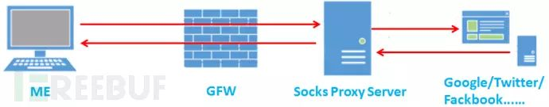
早期我们可能会采用HTTP Proxy代理，在浏览器上设置下代理服务器的IP、端口、认证账户和密码。但有些软件的网络通信数据并不是HTTP协议，就需要寻找其它方法。
SOCKS代理是个不错的解决方案，不管应用层是什么协议，只要是传输层是TCP协议就可以代理。SOCKS代理中最新的协议是SOCKS5。相对SOCKS4作了大幅度的增强。
首先，它增加了对UDP协议的支持；其次，可支持多种用户身份验证方式和通信加密方式；最后，修改了SOCKS服务器进行域名解析的方法，使其更加优雅。
经过这次脱胎换骨的升级，SOCKS5于1996年被IETF确认为标准通信协议，RFC编号为1928。经过10余年的时间，大量的网络应用程序都支持SOCKS5代理。
关于SOCKS代理的更多资料感兴趣的可以自行搜索。让我们把科学上网的思路转变下，如果把SOCKS代理服务架设到内网中，并从外网访问内网的SOCKS代理服务，是否可以访问到内网中开放的各种资源，实现内网漫游呢？
0×01 转变SOCKS使用思路
我搭建了一个比较简单的模拟环境来验证这种想法，该过程主要演示SOCKS代理在内网漫游时发挥的重要作用。
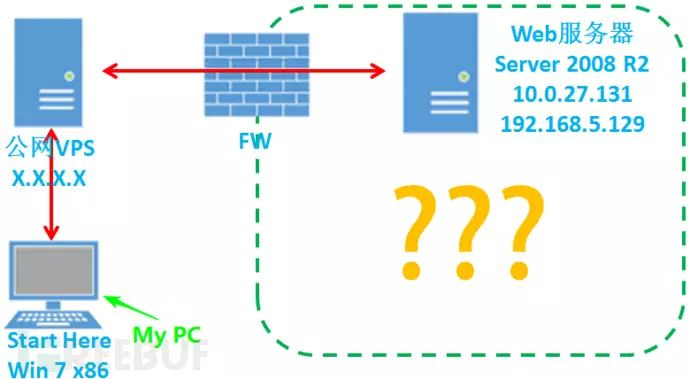
左侧是我们的个人电脑和一台具有公网IP的VPS，My PC通过NAT连接互联网。右侧模拟的是一个小型网络。假设我们获得了一台Web服务器的控制权限，该服务器配有两块网卡，10.0.27.131连通互联网，192.168.5.129可与内部网络连通。
经过信息收集和端口扫描，小型网络结构如下图所示，由四台服务器和两台嵌入式设备组成。其中我们控制的Web服务器是连通互联网和内部网络的关键节点，其余服务器均不能直接连通互联网。
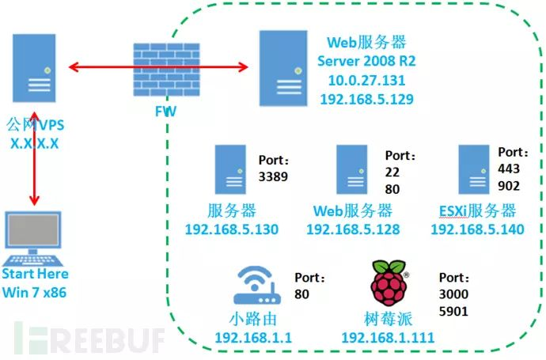
想要在内网中漫游，我们希望能够访问服务器和设备提供的各种资源，因此需要通过某种方式使My PC上安装的浏览器及其它客户端等软件能够访问右侧内部网络中所有开放的端口。传统方法是利用lcx等工具，进行端口映射。比如要映射192.168.5.128的80端口：
1、在VPS上执行
lcx.exe –listen 8080 802、在web服务器上执行
lcx.exe –slave X.X.X.X 80 192.168.5.128 803、在左侧的My PC机上打开浏览器并输入
http://X.X.X.X:8080即可访问右侧内部网络中192.168.5.128服务器的80端口。
lcx工具实现的是一对一的端口映射。但如果要想访问右侧内部网络中列出的所有端口，难道我们需要一次又一次地重复上述的步骤么？
这样不仅麻烦而且效率低下，并且当某些客户端软件在运行中需要访问已映射端口之外的端口时，这种传统方法也无能为力。
此时正是展现SOCKS代理在内网漫游时的重要价值了！让我们在10.0.27.131这台既连通互联网又连通内部网络的Web服务器上架设SOCKS代理。
0×02 工具搜集
首先需要明确的是该Web服务器是Windows Server 2008 R2系统，所以选用的SOCKS代理软件服务端必须能够在Windows平台上正常运行，并且尽可能不需要安装其他依赖软件。
同时，如果我们处于渗透测试的过程中，尽可能使用无GUI界面的工具。必须使用GUI界面配置和启动的SOCKS服务端程序将会放在最后考虑。
按照这两条标准进行搜集，我发现下面几款工具，推荐一下！
1、Earthworm
作者：rootkiter
工具网址：http://rootkiter.com/EarthWorm
Earthworm不仅具备SOCKSv5的功能，还具备反弹式SOCKS代理和lcx端口转发、映射的全部功能（listen、tran、slave）。
同时提供了多种可执行文件，以适用不同的操作系统，Linux、Windows、MacOS、Arm-Linux。命令行操作，无GUI，适合渗透测试使用。
2、xsocks
作者：5loyd
工具网址：https://github.com/5loyd/xsocks
xsocks是一款能在Windows和Linux系统上运行的反弹式SOCKS代理服务端。命令行操作，无GUI，适合渗透测试使用。当然使用前需要从github上下载代码编译，Windows用VS2010及以上版本即可编译。
3、ShadowSOCKS（影梭）
作者：@clowwindy等 工具网址：https://github.com/shadowSOCKS 还有官网呀：http://shadowsocks.org
ShadowSOCKS是一个开源 SOCKS5 代理项目。如其官网所言，它是 “A secure SOCKS5proxy, designed to protect your Internet traffic” （一个安全的 SOCKS5 代理）。
其作用，亦如该项目主页的 wiki中所说，“A fast tunnel proxy that helps you bypass firewalls” （一个可穿透防火墙的快速代理）。
ShadowSOCKS有python、nodejs等诸多版本，还有移动版。
在Windows平台下，推荐使用libQtShadowSOCKS，用C++编写并使用了Qt 5框架。
Release版本地址：https://github.com/shadowSOCKS/libQtShadowSOCKS/releases
无GUI界面，命令行版，支持x86和x64系统，相当好用。
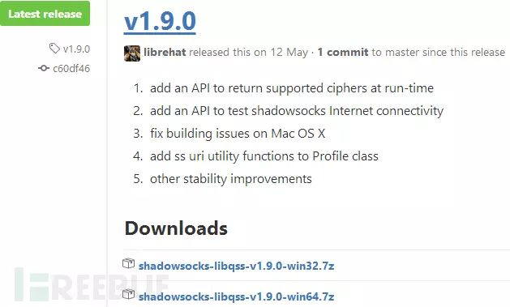
后面会详细介绍这款代理服务端程序的使用。
前面主要是代理服务端程序的推荐，当然我们还需要客户端。
4、SocksCap64
作者：Taro
工具网址：http://www.sockscap64.com
一般浏览器是支持代理设置的，但如果是渗透测试，肯定要使用很多不同的工具，但这些工具并不能保证都支持代理设置。因此我们需要使用应用程序外壳代理软件来使不能设置代理的软件和程序的网络数据流量通过代理。
推荐SocksCap64，比较靠谱的一个软件，可在Windows系统下使用。
SocksCap64是由Taro Labs开发的一款免费的应用程序外壳代理软件。SocksCap64可以使Windows应用程序通过SOCKS代理服务器来访问网络而不需要对这些应用程序做任何修改, 即使某些本身不支持SOCKS代理的应用程序通过SocksCap64之后都可以完美的实现代理访问。
例如: Web Browsers, IM程序, FTP Clients, e-mail programs or games。
（1）完美支持SOCKS4/5/Http/Shadowsocks代理协议。
（2）完美支持TCP& UDP网络协议。
（3）支持远程SOCKS代理解析域名。
0×03 架设代理服务端
工具推荐完了，需要在模拟环境中进行测试。经过测试，我发现shadowsocks代理服务端与SocksCap64应用程序外壳代理软件配合使用可以达到比较完美的效果。下面我将详细介绍这两款工具在模拟环境中的使用姿势。
shadowsocks-libqss-v1.9.0-win64.7z下载完后解压，是一个单独的exe程序。将它上传到Windows系统的Web服务器上，同时准备一个配置文件config.json，里面配置好SOCKS端口，认证密码，和加密方式等。
{
"server":"0.0.0.0",
"server_port":1080,
"local_address":"127.0.0.1",
"local_port":1080,
"password":"SOCKS5",
"timeout":600,
"method":"aes-256-cfb",
"http_proxy": false,
"auth": false
}
将config.json文件上传到同一目录下。
命令行执行
shadowsocks-libqss.exe –c config.json –S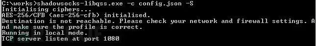
由于这个代理服务端并不是架设在具有公网IP的服务器上，并且不具备反弹代理的功能，因此我们还需要利用lcx将代理端口映射到公网上。
在公网VPS上执行
lcx –listen 80 8080在Web服务器上执行
lcs –slave X.X.X.X 80 127.0.0.1 1080ok，万事具备，就等待我们连接代理啦。
0×04 配置SocksCap
下载安装SocksCap64，以管理员权限打开。默认浏览器已经添加。
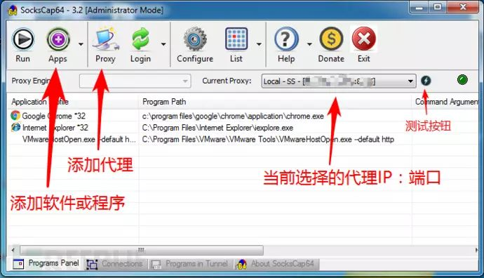
点击Proxy，设置下代理服务器IP、端口、口令、SOCKS类型和加密方式。
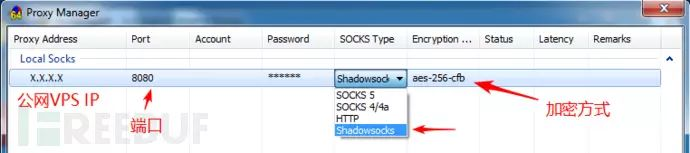
根据之前在config.json中的配置参数，配置好即可，Account为空。
从我们My PC电脑到模拟网络中Web服务器上SOCKS代理服务的整个通信链路就建立起来了!利用lcx的slave模式将代理端口反弹到公网VPS的80端口上，一般是可以穿透FW的。
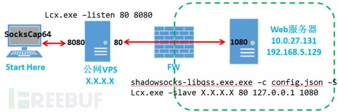
让我们开启内网漫游的旅程吧！
0×05 内网漫游
双击浏览器，然后输入我们想要访问的资源。轻松访问到192.168.5.128的80 端口、192.168.1.1小路由的80端口和树莓派的3000端口提供的资源。这种利用SOCKS代理实现一对多端口映射的优势立即体现了出来，效率倍增。
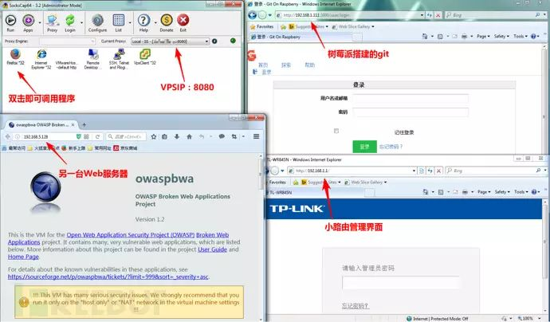
此时在架设代理的Web服务器上查看netstat-ano网络连接，可以看到，代理程序正在访问内部网络中多个IP的不同端口。
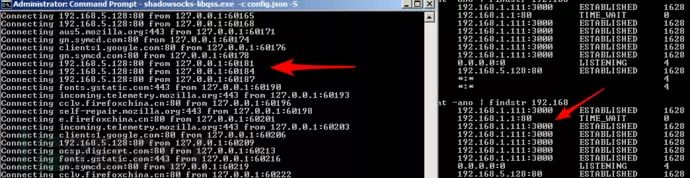
我们成功实现了一台不在该模拟网络中的电脑通过SOCKS代理漫游内部网络任意Web资源的目标。
还有哪些程序能够利用SocksCap外壳程序通过代理访问模拟内部网络中的开放端口呢？
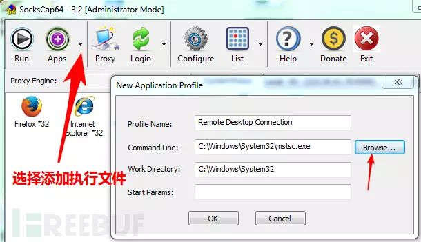
添加远程桌面到ScoksCap中，如图。尝试访问192.168.5.130的3389。

Cool，此时在架设代理的服务器上查看网络连接，可以看到代理程序与192.168.5.130的3389端口产生的网络连接。
还记得模拟环境中的树莓派开放的5901端口么，估计是VNC的端口，让我们试试。
将VNC-Viewer程序添加到SocksCap中，看来有问题呀…..
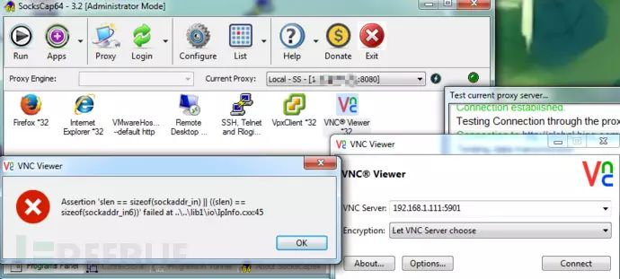
不过没关系，可以采用传统的lcx一对一端口映射来解决这个问题。
再试试putty，添加putty到SocksCap中。用putty访问192.168.5.128的22端口，成功登陆。
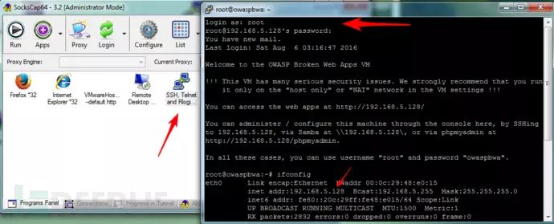
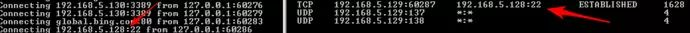
最后我们需要访问一台ESXi服务器，试试用VMware vSphere Client通过代理能否访问它。
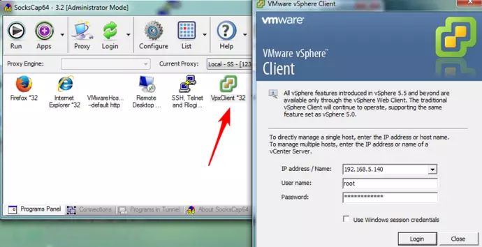
将VMware vSphere Client加入SocksCap中，输入IP、用户和口令。点击Login后发起网络连接。
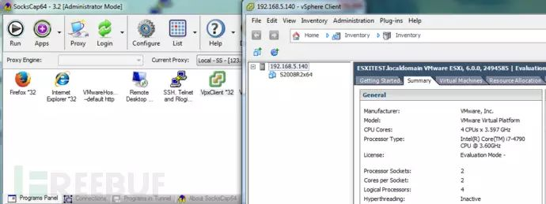
bingo，借助SOCKS代理成功登陆，在架设代理的服务器上可以看到相应的网络连接。
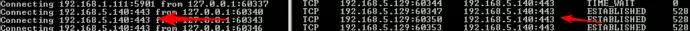
VMware vSphere Client客户端主要与ESXi的443端口进行通信。打开一台S2008R2x64的虚拟服务器的电源，并使用Console进行桌面登陆。
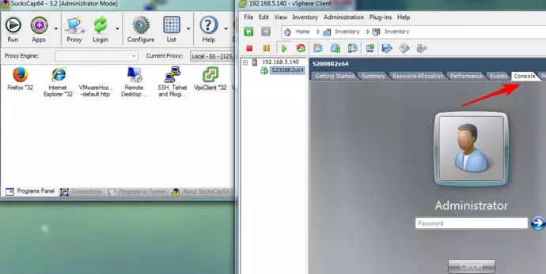
然后，我们再打开Datastore，浏览存储目录并尝试下载文件。
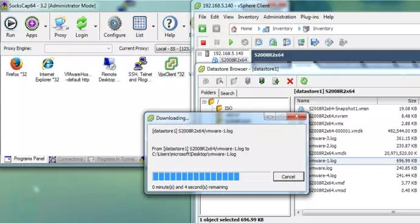
在用Console登陆虚拟机和从Datasotr上浏览目录下载文件时，我仔细观察了代理服务器的网络连接。请注意与902端口产生的网络连接。

当我们使用VMware vSphereClient登陆ESXi时，通信是建立在ESXi的443端口上。
但当我们使用Console和Datastore Browser时，VMware vSphere Client客户端会与ESXi的902端口建立新的通信，通过数据包分析发现Console和Datastore Browser的数据均通过902端口传输。
如果此时使用传统一对一的端口映射，先将ESXi的443端口映射到公网，再使用Client登陆。当点击Console面板时，Client突然产生与其它端口的网络通信会让我们手忙脚乱。此时使用SOCKS代理的就能轻松解决这个问题。
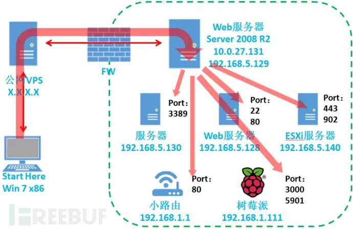
在内网架设SOCKS代理，再利用SocksCap等类似程序，就好比我们把工具扔到了上图的Web服务器上，只需要关心该跳板服务器能否访问到内部网络中的其他IP的不同端口。
利用SOCKS代理实现漫游内部网络，也为渗透测试提供了一个良好的跳板支点，并可以发挥部分GUI工具的效能。